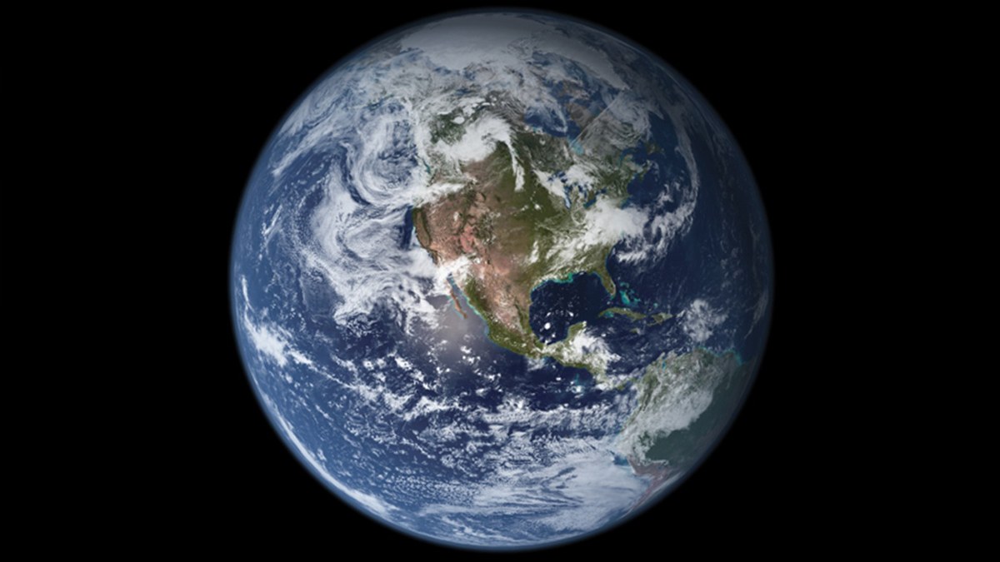

Earth, our home planet, is the only planet in our solar system known to harbor life - life that is incredibly diverse. All the things we need to survive exist under a thin layer of atmosphere that separates us from the cold, airless void of space.
10 Need-to-Know Things About the Earth:
- If the sun were as tall as a typical front door, Earth would be the size of a nickel.
- Earth is the third planet from the sun at a distance of about 150 million km (93 million miles) or one AU.
- One day on Earth takes 24 hours (this is the time it takes the Earth to rotate or spin once). Earth makes a complete orbit around the sun (a year in Earth time) in about 365 days.
- Earth is a rocky planet, also known as a terrestrial planet, with a solid and dynamic surface of mountains, valleys, canyons, plains and so much more. What makes Earth different from the other terrestrial planets is that it is also an ocean planet: 70 percent of the Earth's surface is covered in oceans.
- The Earth's atmosphere is made up of 78 percent nitrogen (N2), 21 percent oxygen (O2) and 1 percent other ingredients -- the perfect balance for us to breathe and live. Many planets have atmospheres, but only Earth's is breathable.
- Earth has one moon. Another name for a moon is satellite.
- Earth has no rings.
- Many orbiting spacecraft study the Earth from above as a whole system and together aid in understanding our home planet.
- Earth is the perfect place for life.
- Earth's atmosphere protects us from incoming meteoroids, most of which break up in our atmosphere before they can strike the surface as meteorites.